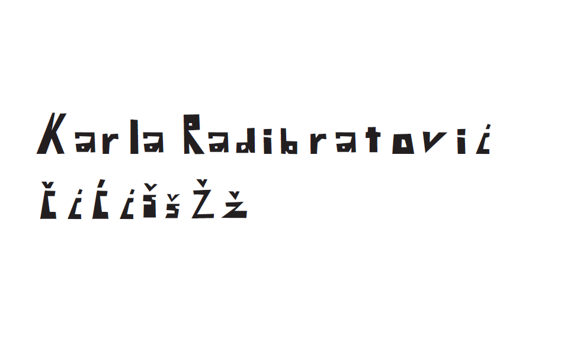
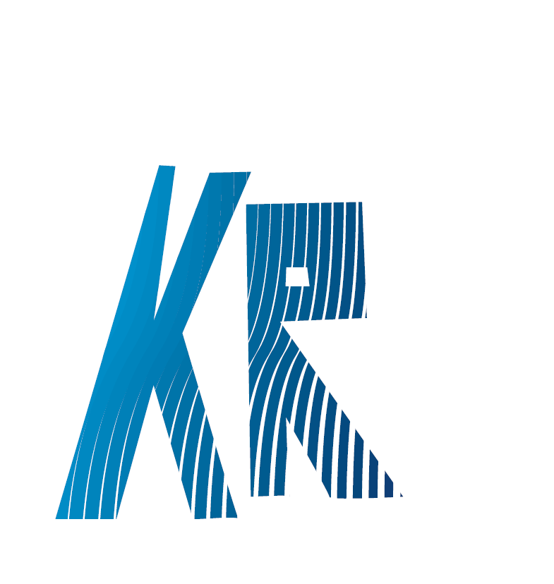
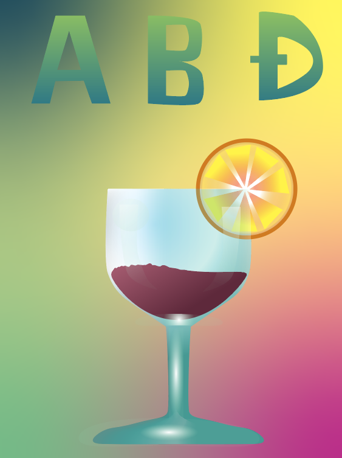
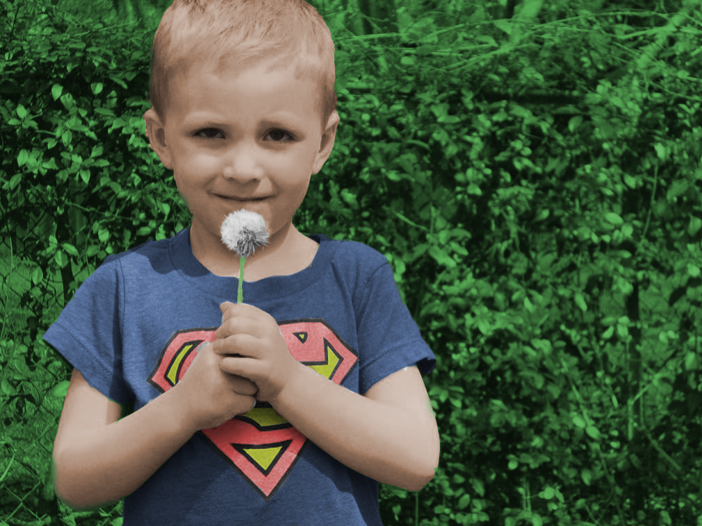
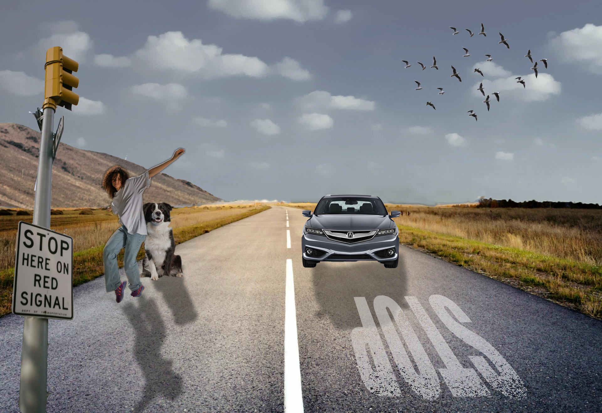
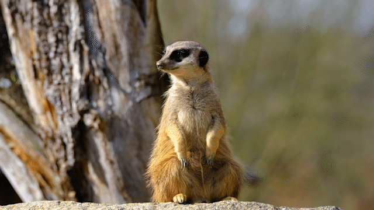
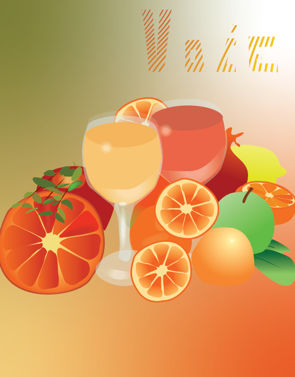
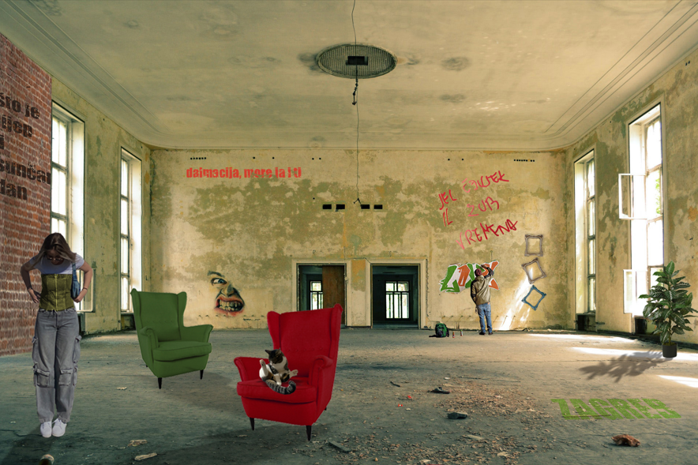

Odrađene vježbe:
Četiri vježbe vektorske grafike:
Prva vježba:Potrebno pomoću fontforgea napraviti svoj font
Druga vježba: Potrebno u Illustratoru, pomoću svog fonta i krivulja dobiti sljedeći efekt.
Treća vježba:Potrebno pomoću krivulja, i reflect toola napraviti islutraciju

Četvrta vježba: Potrebno pomoću raznih alata i gradijenta dobiti željenu ilustraciju:

Tri vježbe piksel grafike:
Prva vježba: U photoshopu, potebno otkloniti pomoću raznih alata (clone tool, stamp tool..) razne nedostatke na licu

Druga vježba: Potrebno crno bijelu fotografiju obojati pomoću layera i maski.
Treća vježba: Potrebno pomoću selekcija u prostor ubaciti elemente iz drugih fotografija kako bi sve zajedno imalo istu perspektivu

Vježbe video/WEB:
Prva vježba: Napraviti kinematograf pomoću Aobe Premiera
Druga vježba: potrebno urediti tj. montirati video
>Treća vježba: Napraviti web stranicu prema pisanim uputama i pomoću videa: Link na web stranicu
Projektni zadaci:
-

